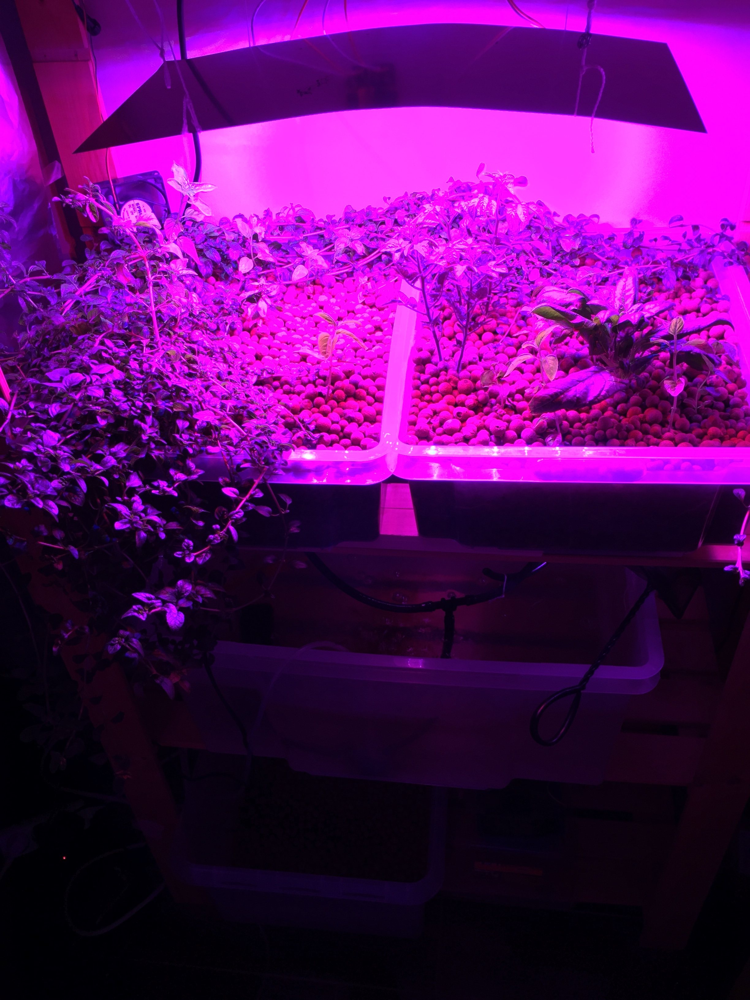

Dit is een van de eerste posts in een reeks die zeer kort verschillende manieren van landbouw, of het produceren van voedsel, bespreekt. We gaan van start met Aquaponics, een systeem waarbij aquacultuur en het kweken van gewassen op hydrocultuur gecombineerd wordt. Deze vorm is nogal speciaal voor mij, omdat ze een aantal jaar terug m’n interesse in agro- en biotechnologie aangewakkerd heeft. Ik had er ergens eens iets over gelezen en het idee van te werken met een (bijna) gesloten ecosysteem en het binnen kunnen kweken van groenten intrigeerde mij als landbouw-vreemde stadsjongen enorm.
The basics
Het systeem ziet er in z’n meest basisvorm als volgt uit: vissen worden gekweekt in een watertank (aquacultuur) en planten worden gekweekt op water (hydrocultuur). Het water van de vissen wordt opgepompt naar de planten en gaat dan terug naar de vissen. Het idee is dat de vissen via hun excretiestoffen voor de meststoffen zorgen die de planten nodig hebben. Dit gaat als volgt in z’n werk:
- Vissen worden gevoerd
- Hun uitwerpselen bevatten ammonium (NH₃)
- Nitrificerende bacteriën zetten de ammonium om in nitrieten (NH₃ -> NO₂)
- Andere nitrificerende bacteriën zetten de nitrieten om in nitraat (NO₂- -> NO₃-)
- Deze nitraten dienen als voeding voor de planten en worden naar daar gepompt
- De planten nemen de voeding op en samen met het substraat waarin ze staan filteren ze het water
- Het water wordt terug naar de vissen gepompt
In kleinschalige systemen staan de vissen en de groenten vaak in dezelfde ruimte. In grootschaligere projecten zijn het echter vaker 2 verschillende bedrijven met elk hun specialisatie (hydrocultuur of aquacultuur) die apart staan.
In de praktijk komen er nog heel wat andere zaken bij kijken indien men dit succesvol wil toepassen op grotere schaal, maar dat laten we even ter zijde.
Voordelen
Deze manier van kweken heeft duidelijk een aantal voordelen:
- Afvalwater is normaal een groot probleem bij aquacultuur, omdat schadelijke stoffen zich opstapelen. Bij aquaponics wordt het afvalwater sterk gereduceerd en moet minder afvalwater geloosd worden.
- Het meststoffen verbruik ligt veel lager voor de tuinbouwer
- De overtollige warmte in de serres wordt afgevoerd naar de aquacultuur
Experimenteren, Educatie en Katalysator
Het feit dat bij zo’n systeem heel wat technologie komt kijken en je het op relatief kleine schaal kan implementeren maakt het ook zeer educatief. Zo ging ik zelf aan de slag en zette ik mijn eigen systeem op in de living. Ik maakte hiervoor m’n eigen groeilamp (een lamp die de benodigde frequenties licht genereert voor de plant), kocht wat bakken, een pomp, verbindingsbuizen, argex en 2 vissen. Op deze manier kwam ik voor het eerst in contact met het verbouwen van groenten. Het moeten zorgen voor en zien groeien van een zaad tot plant met groenten is werkelijk inspirerend. Dit was dan ook de katalysator voor mijn interesse in tuinbouw, en nog later groen.
Mijn allereerste aquaponics setup

Er konden zelfs kerstomaten in gegroeid worden
Weldra groeide m’n enthousiasme en maakte ik m’n tweede, grotere versie
Later, nadat ik bij m’n ouders een stuk grond gereserveerd had om te moestuinieren (aangezet door m’n interesse in aquaponics), intalleerd ik ook een buitensysteem bij hen
Voorbeelden in België
Urben Smart Farm
PCG groententeelet met Tomato Masters en Aqua4C.